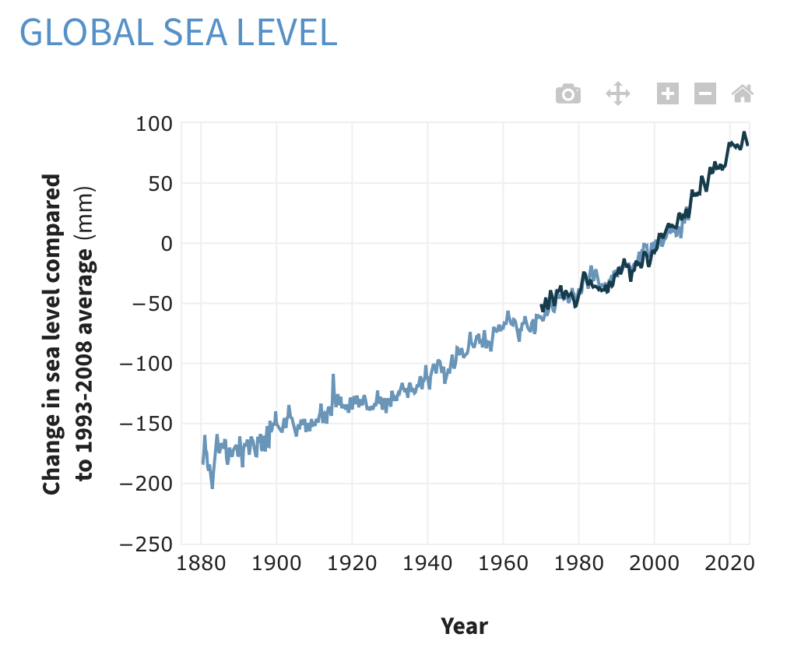
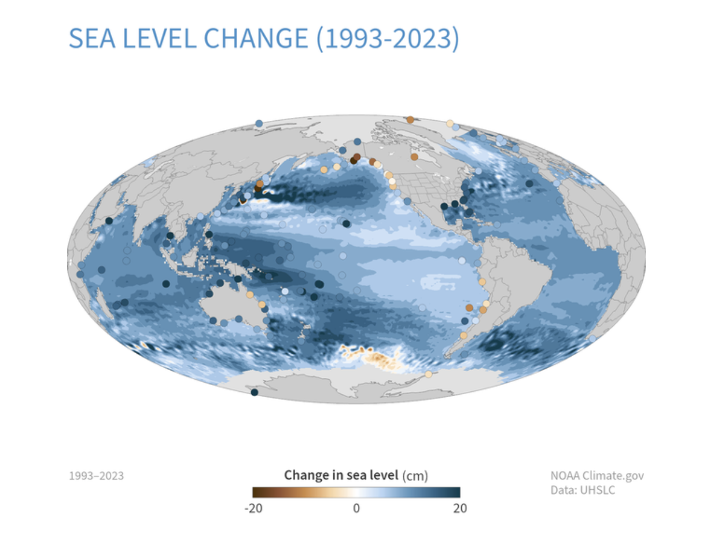
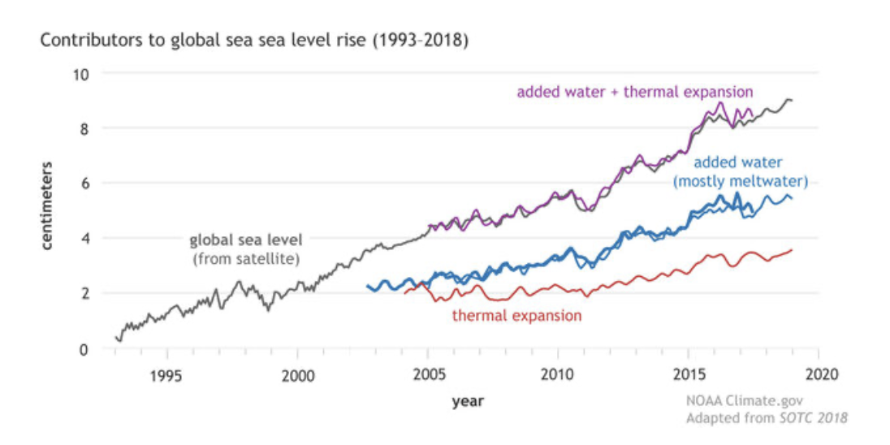
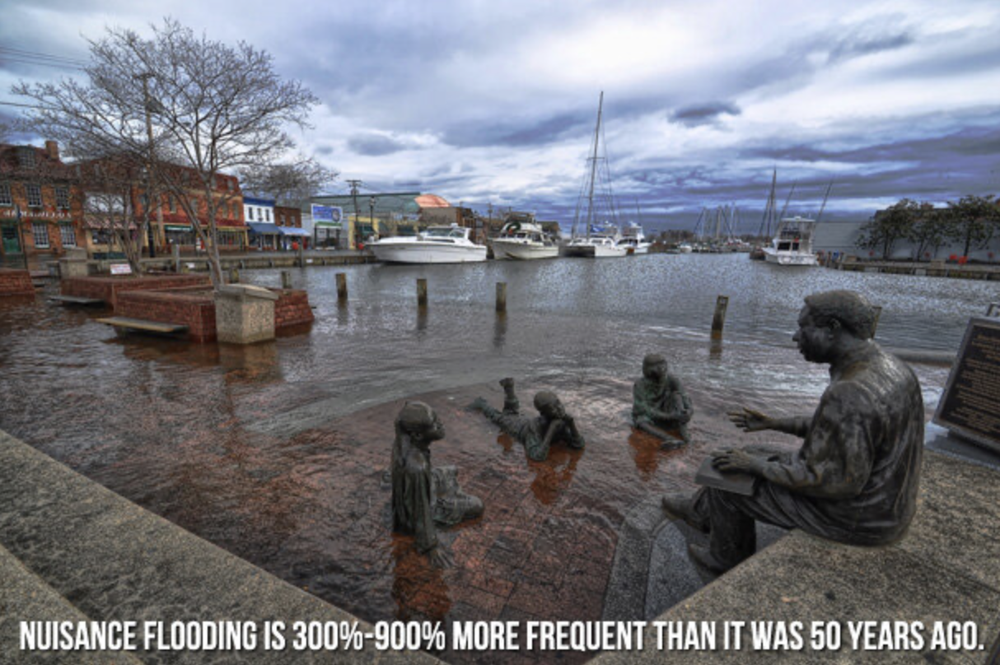
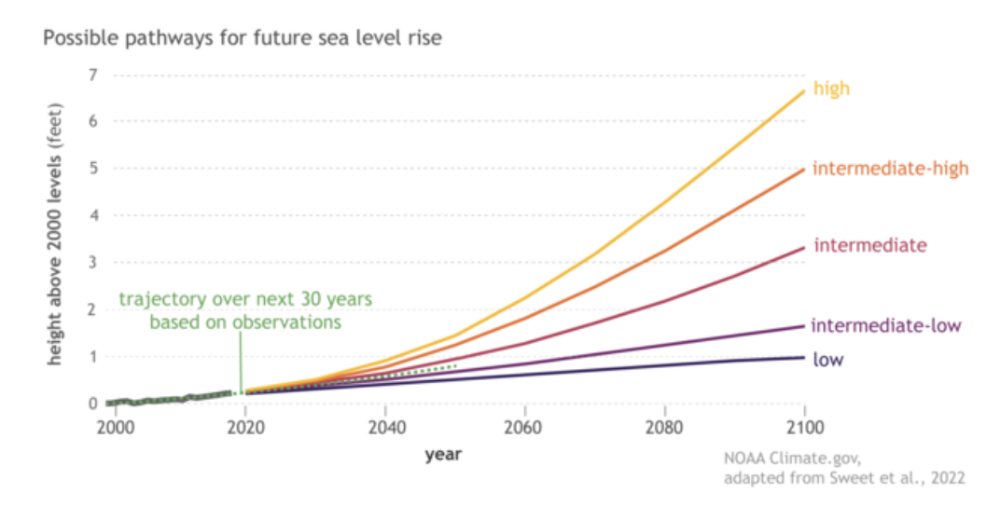
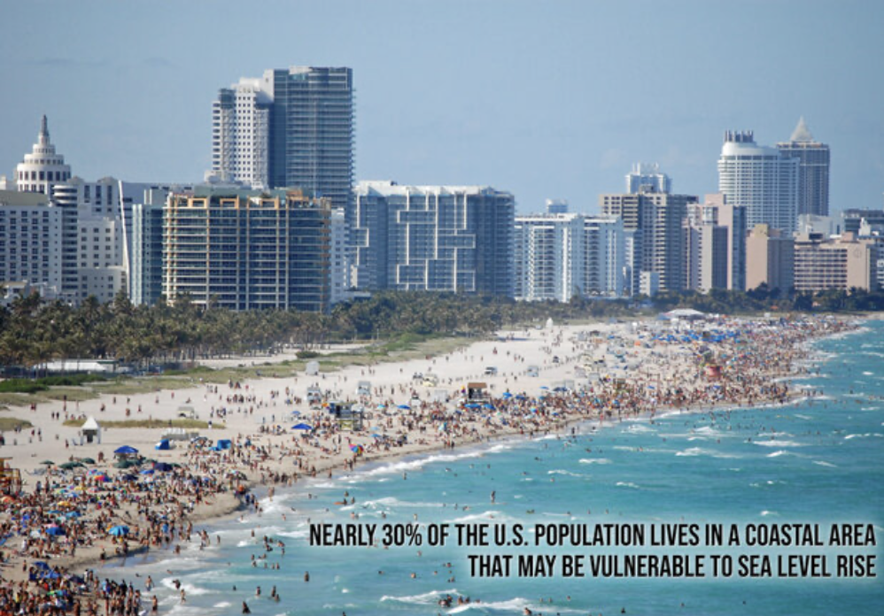

By Brian Cheung and Michael Yu
Published April 6 2025
Global average sea level has risen about 8-9 inches (21-24 centimeters) since 1880.
In 2023, global average sea level set a new record high—101.4 mm (3.99 inches) above 1993 levels.
The rate of global sea level rise is accelerating: it has more than doubled from 0.06 inches (1.4 millimeters) per year throughout most of the twentieth century to 0.14 inches (3.6 millimeters) per year from 2006-2015.
In many locations along the U.S. coastline, the rate of local sea level rise is greater than the global average due to land processes like erosion, oil and groundwater pumping, and subsidence.
If we are able to significantly reduce greenhouse gas emissions, U.S. sea level in 2100 is projected to be around 0.6 meters (2 feet) higher on average than it was in 2000.
On a pathway with high greenhouse gas emissions and rapid ice sheet collapse, models project that average sea level rise for the contiguous United States could be 2.2 meters (7.2 feet) by 2100 and 3.9 meters (13 feet) by 2150.
